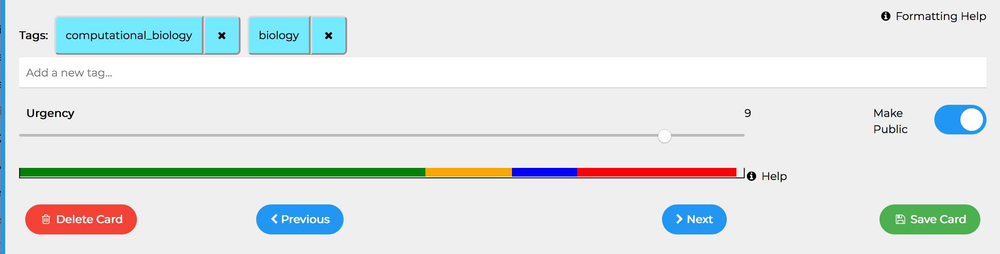
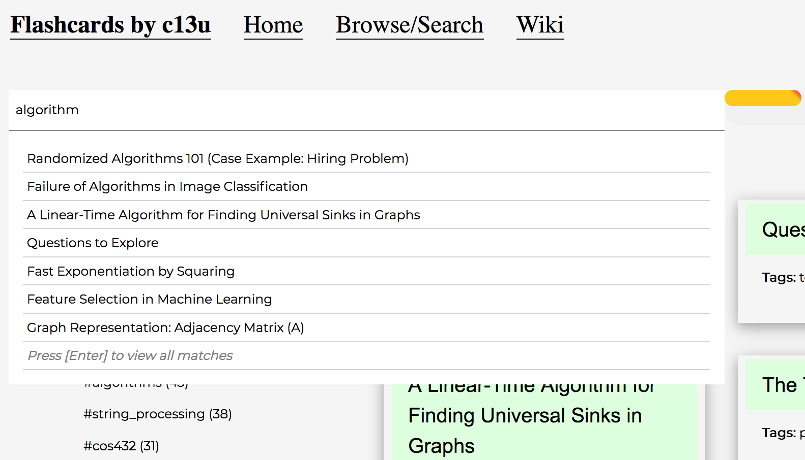

The Card Review System
Spaced Repetition is commonly practised when a user has to retain a large amount of information indefinitely. It exploits the Spacing Effect, the phenomenon whereby learning is greater when studying is spread out over time, as opposed to studying the same amount of content in a single session.
Flashcard software usually adjusts the spacing time based on whether the user provided the right answer. Answers may at times be too complex to define in code. We therefore depend on the user updating the card.urgency attribute in lieu of providing an answer to the flash card. Since the cards are shown in decreasing order of urgency, cards that are ranked lower will appear much later in subsequent review sessions.
Urgency Bars
At the bottom of the card, there are 4 urgency bars give you an idea of where the urgencies of the selected cards lie.

For instance, the card above has an urgency of 9. Of the cards that we can access using the previous and next buttons, this card lies in the top 25% of the urgencies (red bar).
The urgency bars should guide you when setting the urgency of any given card. If the bars are cramped together, you might want to space out the urgency values of those cards.
Text Search
Search should be relevant and fast, erring on the side of relevance. Connecting to the database is slow. Luckily, mongoose allows us to maintain a persistent connection to the database. Studying the docs helps one make efficient queries and capture some low-hanging fruit. For instance, using where(some_js_expression) in MongoDB is expensive because some_js_expression will be evaluated for every document in the collection. Using regex inside the query itself is more efficient. MongoDB supports text search and a 'sort by relevance' function. Yay!

We want to strike a balance between making frequent hits to the database and providing search feedback as the user types. Whenever a user hits SPACE after at least one word, we query the database for 7 results and display their titles in the dropdown menu on the search bar. If the user clicks on any of the 7 results, we display the entire card and terminate the search. If the user hits ENTER, then we query the database for all cards that match the query. All of these matching cards are then displayed to the user.
To minimize the amount of data being transferred between the client and the database as the user types a query, the server returns partial cards to a search query. These partial cards contain the _id, urgency, title fields and nothing else. We display the titles in the dropdown menu that gets updated as the user continues searching. Once the user has decided on which card(s) to view, we use the already built functions to load the card, i.e. first check if the card is in the cache, otherwise, fetch the full card from the database.